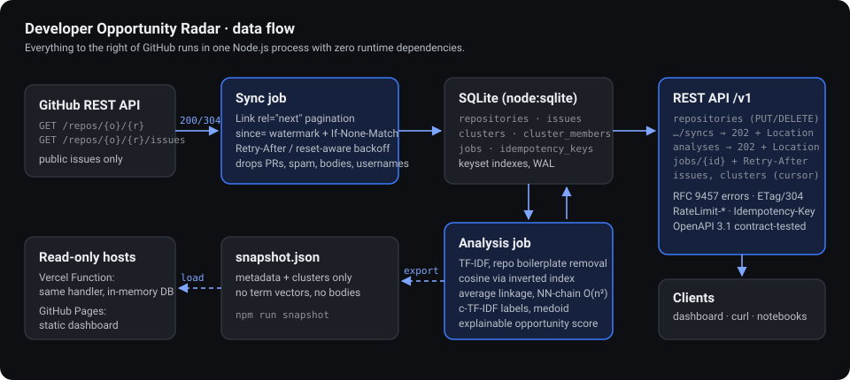

Which problems keep coming back across {{repo_count}} Node.js HTTP frameworks?
The radar tracks public GitHub repositories, clusters their issues by what they describe, and ranks the clusters that recur across projects as developer opportunities. Every finding links back to the issues it came from.
Top opportunities
Ranked by opportunity score. Each bar is split into the five weighted components that make up the score.
score = 100 × (0.30 volume + 0.25 spread + 0.20 engagement + 0.15 unresolved + 0.10 momentum). Every component is normalised to 0–1 and returned by the API, so each number can be audited. Select a bar to open its evidence.
Where problems recur
Cross-repository clusters by the number of member issues in each tracked repository.
Cluster × repository
Issues ingested per repository
Issues opened per month
The corpus is the most recently updated issues per repository (at least 1,000 items each, pull requests removed, paging further until the last {{recent_days}} days are fully covered), so older months are under-sampled. Read this as corpus shape, not a trend. Every repository's sample reaches back at least {{min_cover_days}} days, so the "opened in the last {{recent_days}} days" counts are complete.
Cluster explorer
All {{cluster_count}} clusters. Filter, then open one to see its evidence.
Try the live API
Real requests to the read-only deployment at {{api_base}}. Response headers are shown because they carry half of the contract.
How it works
From issues to ranked findings
Ingest. A sync job calls GET /repos/{owner}/{repo}/issues?state=all&sort=updated, follows Link: rel="next" pagination, drops pull requests, and stores metadata only. The next sync sends since= the newest updated_at it holds plus If-None-Match, so an unchanged repository costs one 304.
Represent. Title words count three times, body words are capped at five, code blocks, HTML, URLs and stack frames are removed, and words that appear in more than 35% of one repository's issues (template headings) are dropped for that repository.
Cluster. TF-IDF vectors, cosine similarity via an inverted index, then exact average-linkage clustering with the O(n²) nearest-neighbour-chain algorithm. The dendrogram is cut where average similarity falls below {{threshold}}; groups of 3+ issues become clusters. Labels come from class-based TF-IDF; the medoid is the representative issue.
Rank. The score rewards size, spread across repositories, discussion, unresolved share and recent activity. Weights are fixed and published with every analysis.
Data handling and limits
Source: the GitHub REST API, within GitHub's Acceptable Use Policies (research on public, non-personal information, published open access). Titles are truncated to 15 words and always shown with their source link. Issue bodies are read in memory for term extraction and never stored or published. No usernames are kept.
Limits worth knowing: bag-of-words similarity misses paraphrases with no shared vocabulary; titles in other languages cluster poorly; the score is a ranking aid, not a market-size estimate; and one snapshot is one point in time.

Product brief
What this is and how it would grow. Items tagged proposed are plans, not results.
What it is
A REST API and dashboard that turns public issue trackers into a ranked list of recurring problems, each traceable to its source issues.
Who it is for
Developer-tool founders, DevRel and product teams, and maintainers deciding what to build, document or fix next.
Why it wins
Every number is explainable: deterministic clustering, a published scoring formula, and a source link on every finding. No model hallucination path between the data and the claim.
How it is structured
Resource-oriented API (repositories, issues, clusters, jobs), SQLite storage, a job runner for syncs and analyses, and static snapshots for read-only hosting.
How users discover itproposed
The public dashboard and API reference, the open-source repo, and write-ups of notable cross-project findings.
How users engage
Browse ranked clusters, filter by repository, open evidence, or call the API directly from scripts and notebooks.
How users convertproposed
Self-host from the repo, or request a tracked set of repositories for their own market.
How it makes moneyproposed
Open source today. A hosted tier with scheduled syncs, private watchlists and alerts is the obvious paid layer, subject to a fresh data-rights review.
How it launchesproposed
Public snapshot for one ecosystem (this page), then two more ecosystems to prove the method transfers.
How it improvesproposed
Label feedback on clusters, duplicate-link signals from GitHub, and scheduled re-syncs that track how each cluster moves over time.